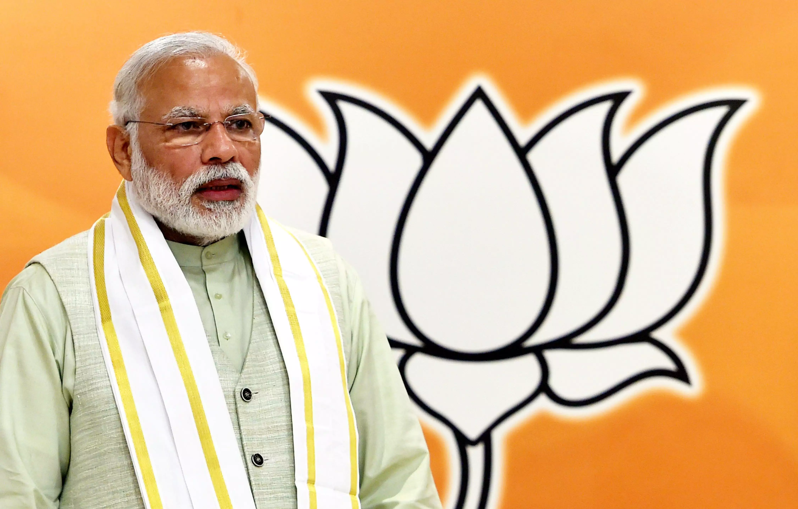
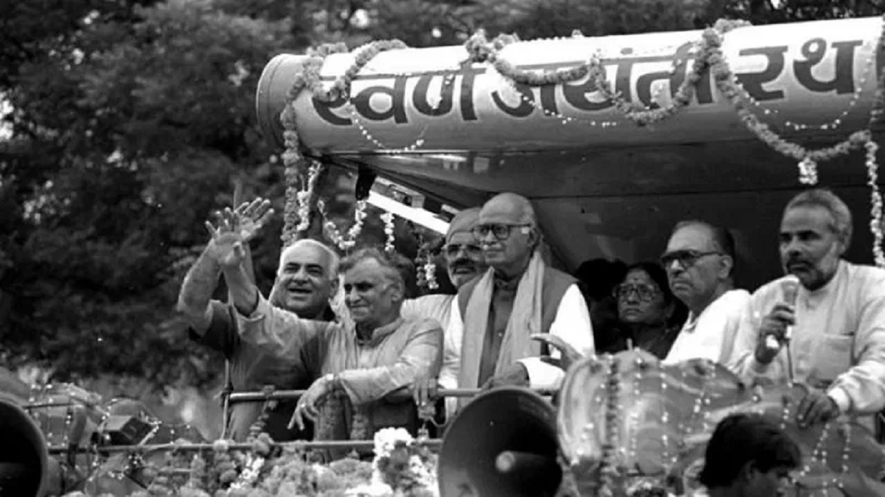
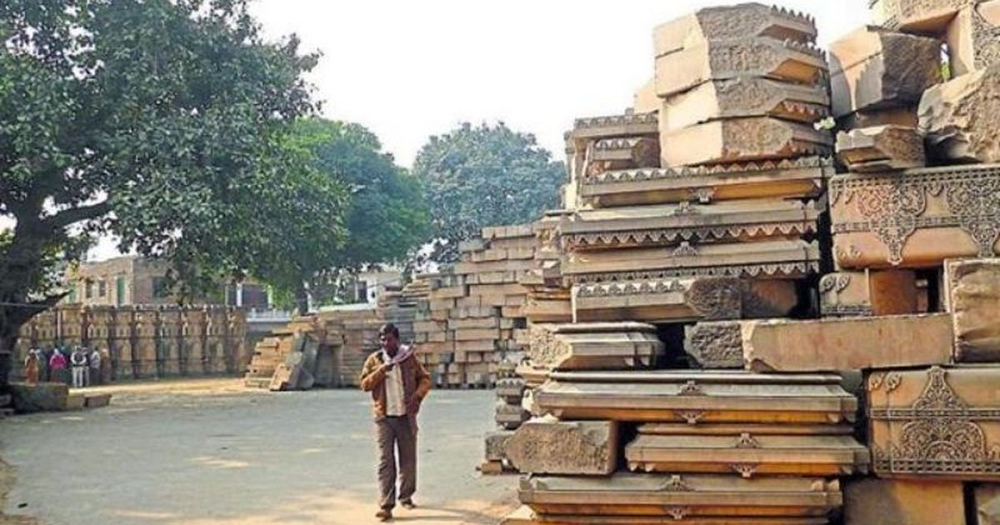
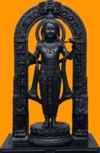
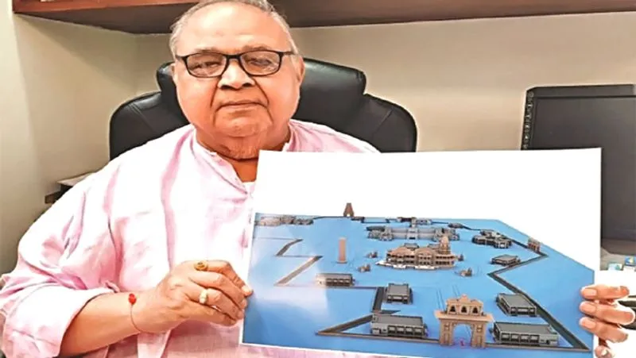
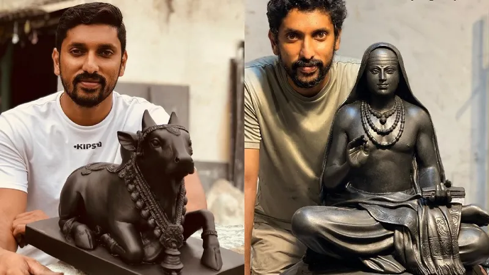

Ayodhya Ram Mandir

History
Shri Ram's temple will be ready in Ayodhya on 22 January 2024 and everyone will be able to go there to have darshan of God. There has been a dispute on this issue in Ram temple for 500 years. This dispute of Ram Mandir continued for 500 years and why was it not resolved even after so many years of Independence and how Ram Mandir became a political agenda. This whole dispute started in the year 1528 when Babar's army general Mir Baqi demolished the ancient Ram temple situated in Ayodhya and built a mosque which later came to be known as Babri Masjid. The bricks and pillars of the temple were broken. According to some Hindu texts, it was reused in the construction of the mosque itself. The ancient Ram temple which was demolished by Mir Baqi was built by a Hindu king Vikram Aditya. After the year 1528, this entire place became disputed. Babar wrote his autobiography. Whose name was Babar Nama in 1598, where he has mentioned this incident of demolishing the temple and building a mosque. Apart from this, this thing is also mentioned in many European texts. Some records also believe that the mosque was built by Aurangzeb and not Babar. Many historians have given different explanations regarding this confusion between Aurangzeb and Babar. Well, for a long time, Hindus have been demanding their rights at this place, due to which there is a lot of discord between the Hindu and Muslim communities. Disputes have also been going on and out of this, there is mention of one dispute which aroused great anger among the Dono community in the year 1855, after which a small part of this place was taken away by the Hindu community. Later, there was a lot of change in the political structure of entire India. Major change takes place. We are talking about the First Independence War in the year 1856-57, the result of which was that along with Chhas and Gwalior, Ayodhya city also came under the rule of the British East India Company, after which the Ayodhya dispute was settled. Seeing the possibility of Cumulus in the future, the British try to resolve the dispute of Ram Janmabhoomi and they find a solution in such a way that people of both the communities can practice their religious rituals in the disputed area of Ayodhya.
First person
In 1885, this dispute of Ram Janmabhoomi goes to the court and it is started by Mahant Raghuvir Das. Mahant Raghuvir Das ji files the first suit in Faizabad District Magistrate and the second suit in Faizabad District Court. He demands permission to build the temple in front of Ram Chabutra. But their appeal was rejected at both the places, the result of which was that the Hindu community used to worship the idol of Lord Ram under the Ram platform located outside the mosque till independence.

Info About Ram Chabutra
This platform was situated on the east side of the mosque and was also called Ram platform. Now in 1947, India became an independent nation but even today the same solution was applicable on Ram Janmabhoomi which was given by the British but the situation changed soon.

(This image is only for reference)
First Time Saw Ram ji And Sita ji Murti In Masjid
On 22 December 1949, an incident happened which changed the direction of the Ram Janmabhoomi dispute forever. An idol of Ram Sita was found inside the head tomb of Babri Masjid and this was a very big incident. Till the next morning, The news of the incident spread in the entire area and a lot of people started gathering there. When people started gathering in large numbers, a situation like communal rights was created there and keeping this in mind, PM Nehru, the then District Magistrate, He ordered KK Nair to remove those idols from the main dome of the mosque and put them back in the Ram Chabutra.

(This image is only for reference)
Kadangalathil Karunakaran Nair
But KK Nair did not obey the PM's order at that time and refused to move those statues from there. After his reply, Chief Minister Govind Ballabh Panth pressures him to remove the statues but KK Nair does not follow his orders either. And he advises to resolve this issue in the court, so now if the orders are not followed, the idols are covered with net and the locals start worshiping Lord Ram there but after a few days, the government declares that area as disputed. She declares it and locks the entrance there. It is said that if KK Nair had followed PM Nehan's order that day, the Ram Temple dispute would never have been resolved and he would have had to bear the brunt of not following the PM's order. Had to suffer, he had to lose his job and was given an early retirement in 1950.

Supreme Court Judgement
In 1986, a judgment of the Supreme Court came on Ram Janmabhoomi in which Hindu community was given permission to worship at the disputed place. Now at that time, politics on Ram temple also started very fast.

BJP
After separating from the Janata Party of 1980, a new party was formed, Bharatiya Janata Party, which came forward with the idea of Hindu Nationalism. Now after this, two big incidents take place in the year 1984, first is the General Elections in which BJP gets only two seats and Second, under the leadership of BJP leader Lal Krishna Advani, the Vishwa Hindu Pari Ram Janmabhoomi Movement starts the campaign. After the decision of the Supreme Court in 1986, the demand for the construction of Ram temple started increasing and BJP and Vishwa Hindu Parishad also continuously promoted this matter. They started placing in front of the government the same party which had won only two seats in 1984. The same BJP won 85 seats in the 1989 elections. However, the government was formed by Congress and Rajiv Gandhi again became the PM. In 1990, Ram stood in front of the BJP and VHP government. To gain public support for the construction of the temple, another massive campaign is conducted which is also called Ayodhya Rath Yatra or Ram Rath Yatra.

Ayodhya Yatra
This campaign ran for a month from Somnath in Gujarat to Ayodhya and Lal Krishna Advani was leading this campaign. Now this campaign of BJP got a lot of support from the people. People came from different corners of the country to support them. Due to which situations like communal rights started arising and as a result, LK Advan ji was stopped by stopping the Yatra, Bihar Police and UP Police also arrested about 5 lakh pilgrims, still on 30 October 1990 in Ayodhya. This journey gets completed, then this is the case of 2nd November of the same year, when the Kar Sevak was making another journey from Hanumangarh to Ram Janbhoomi, then to stop this journey, then UP Chief Minister Mulayam Singh Yadav opened fire on the Kar Sevak. An order is given and the same order is followed in which 15 Kar Sevaks die but this number is also not clear. Some people say that the number is more than 50 or 60 people.

Demolished babri Masjid
After two years, another big incident happened in which Babri Masjid was demolished. The police kept trying hard to stop the people but they were unsuccessful in it, after which huge communal rights also took place in the country in such cities as Delhi, Mumbai, Bhopal, Surat, Ahmedabad, Kanpur. Riots broke out on a large scale in which around 2000 people died and many BJP leaders were taken into custody. Vishwa Hindu Parishad was also banned but things did not end here. Jihadi groups like Indian Mujahideen, Demons of Babri Masjid. This is cited as a reason for the terror attacks and the bomb blast in Mumbai in 1993 begins. In 1993, the land in the disputed area was acquired by the government and then in the year 2002, the Ayodhya title dispute started again.

First Split Judgment and Archaeological Check
Now in March 2003, the Archaeological Survey of India goes to the disputed sites where the excavation work is done under the direction of the Allahabad High Court. Now in the month of August of the same year, the ASI makes it clear in its survey reports that the 10th floor beneath the mosque is Remains of a Hindu temple that existed in the century have been found, which makes it clear that the mosque was built on top of the temple itself, but the Muslim side raises questions on this survey by ASI and after many hearings, in September 2010, Allahabad The High Court gives the decision to split the land in which it was said that 1/3 of the disputed land will be given to Sunni Waqf Board, 1/3 to Nirmohi Akhara and 1/3 to Ram Lalla, but in 2011, the Supreme Court overturned this decision of Allahabad High Court. Strangely, she says that when there is no demand of any party to split the land, then how is the decision to split the land being passed? In the year 2017, Jagdish Singh advised to resolve the disputed land matter of both the sides outside the court. Let's give and then this year.

Final Judgment
A bench of three judges starts the hearing of this case in the Supreme Court. Now finally on 9 November 2019, the Supreme Court passed its judgment. They order that the Government of India should appoint a Board of Trustees for the construction of Ram Temple within 3 months. Will have to be formed. The Supreme Court allotted the land of Antays Disputed Area which was 2.77 acres for Ram Mandir. The entire area is allotted for temple construction. Now UP Sunni Central Waqf Board is also allotted for the construction of the mosque. 5 acres of land is given in Ayodhya itself. Apart from this, the Supreme Court has declared the 2010 decision of Allahabad wrong and also calls the Babri demolition in 1992 and the incidents of 1949 as violation of loss. Now, 4 months after the decision of the Supreme Court, That is, in the year 2020, the construction of the first phase of Ram temple starts and in a few days the temple will be opened for all the people.
Slogans
- Mandir wahi banayenge (transl. The temple will be built exactly there) is an expression in Hindi, and has become one of the most popular slogans concerning the Ram Janmabhoomi movement and Ram Mandir. It has been used as early as 1985-86, was popularised in the 1990s, and has several variations.
- There are variations of the slogan such as one used by Lal Krishna Advani: "Saugandh Ram ki Khat-e hain; Hum Mandir Wahin Banayegein" (transl. We take a vow of Rama that we will build the temple exactly there). Other variations and adaptations include "Wahin Banega Mandir" (transl. A temple will be built there), "Jaha Ram Ka Janma Hua Tha, Hum Mandir Wahi Banayenge" (transl. The temple will be built where Ram was born), "Ram Lalla Hum Aayenge; Mandir Wahi Banayenge" (transl. Ram Lalla, we will come, the temple will be built there or Ram Lalla we will come to construct a Mandir exactly there.) and "Pehle mandir, fir sarkaar" (transl. First the temple, then the government).
Something About Temple

The ancient temple style in which the temple is being built is called Nagar style. The world famous Khaju Rao temple in Madhya Pradesh has also been built in Nagar style. Apart from this, the Koner Surya temple has also been built in the same style. Construction of the temple Makrana marble and pink sandstone of Rajasthan have been used. Along with granite stones of Tamil Nadu and Telangana, colored marbles of Madhya Pradesh have also been used. The Ram temple, built for about Rs 900 crore, will accommodate more than 25,000 people. There will be locker facilities and basic medical services will also be available. A special stone will also be used in this temple which will be brought from Anjani Hill. This hill is located in Karnataka and this place is the birth place of Lord Hanuman. Also some bricks are used in this temple. Will also be used and the big specialty of those bricks is that Shri Ram is written on those bricks, just like the name of Shri Ram was written on the stones while building Ram Setu and some of these bricks are more than 30 years old because These were brought when people started making preparations to build the temple of Lord Shri Ram, but due to no decision being taken for 30 years, these bricks were waiting to be used now. These bricks were brought from all over the country in 1989. It was brought to my attention that steel is not being used in the construction of the temple because the designers and architects who built this temple say that steel gets spoiled after 80 to 100 years but we are trying to make the temple like this. We want it to last for thousands of years. This temple has been designed in such a way that about 70,000 people can visit this temple every day. Two 60 million year old Shaligram rocks, one of 14 tons and one of 26 tons, Nepal. Statues will be made using these two rocks which were given by the Government of India. It is going to be inaugurated on 22 January 2024.
Designer
The design of Ram temple has been made by Chandra Krant Sompura of the Sompura family of Gujarat. His family has been doing the work of temple architecture for the last 15 generations. The design of Somnath Temple of Gujarat was also prepared by Chandrakant Sompura's father and he is famous all over the world. The family has designed more than 100 temples

Sculptor
The idol of Lord Ram located in the Ram Temple has been created by Arun Yogiraj, a sculptor from Karnataka who has also created the statue of Netaji Subhash Chandra Bose which is installed at the Amar Jawan Jyoti behind the India Gate.

How Ram Mandir Also Support in GDP
Now some people argue that in these Rs 900 crores, many schools and colleges will be built. Another hospital could have been built and Rs 900 crore could have been invested in a temple. Now look, religious tourism has the biggest contribution in India's tourism economy and the biggest chunk of religious tourism also comes from Hindu temples. National Sample. According to a survey report, India's temple economy is worth about Rs 3.2 lakh crore, which is 2.32% of India's GDP. Religious tourism is a huge source of revenue in India and it is also an employment source for many people. This is because a lot of work force is required to meet the demand of products used in religious rituals, which provides employment to many people. After the construction of Ram Temple, many expressways and airport like facilities are increasing in Ayodhya also. After the construction of the temple, a huge price rise has been seen in the real estate sector as well. Now after the inauguration of the Ram temple, lakhs of devotees will come to visit, which will bring a boost to the religious economic activities as well as the hotel, restaurants and transportation sector. There will be a huge boom and lakhs of people will also get employment.
Summary
Important Facts About Ayodhya Ram Mandir
Ayodhya Ram Mandir Overview
Ayodhya Ram Mandir History From 1528-2024 Period Event
About Ayodhya Ram Mandir
Chief Architect and Construction Entities
Temple Dimensions and Style
Construction Materials Used
Architectural and Constructional Aspects of Ayodhya Ram Mandir
Foundation Design of Ayodhya Ram Mandir
Building Description
Other Features
Ram Janmabhoomi Movement
The Ram Janmabhoomi Movement emerged in the 1980s, led by the Vishwa Hindu Parishad, aiming to reclaim the site in Ayodhya where Lord Rama is believed to be born. The disputed site housed the Babri Masjid, constructed by the Mughals.